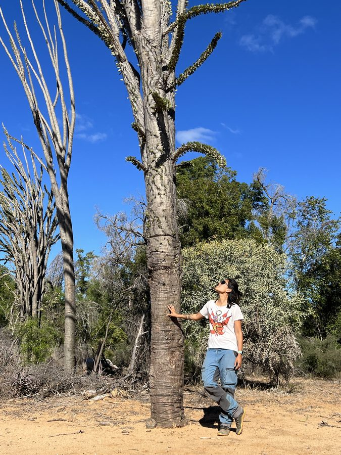
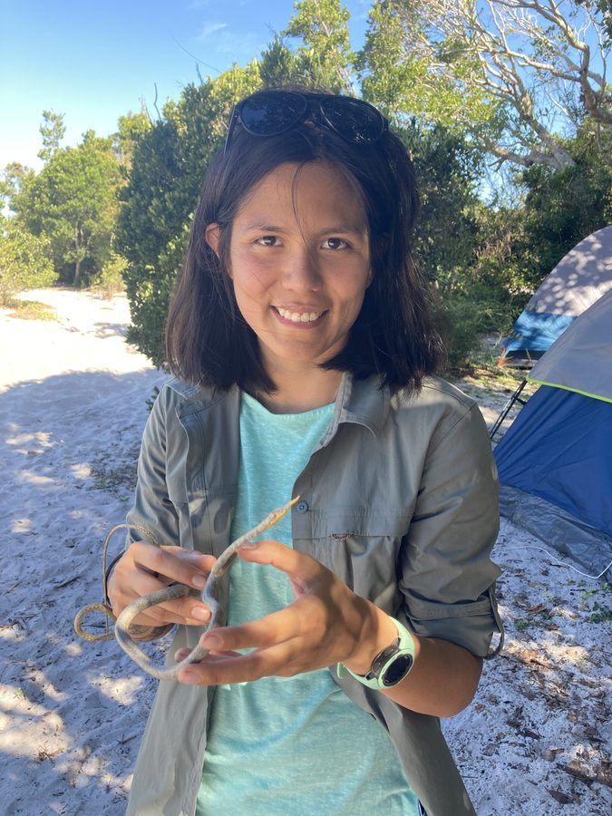
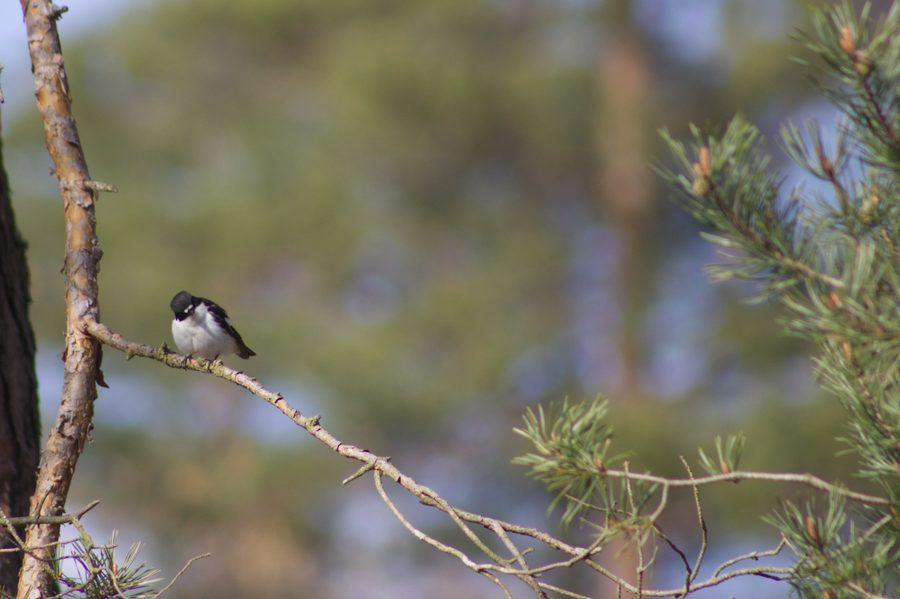
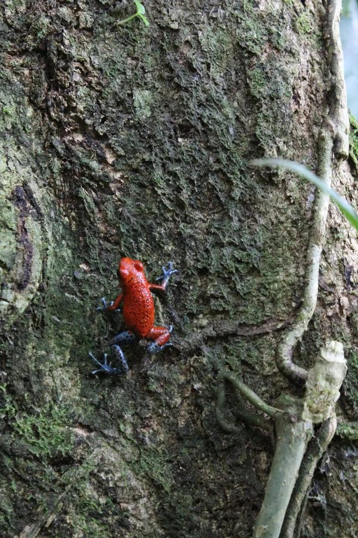
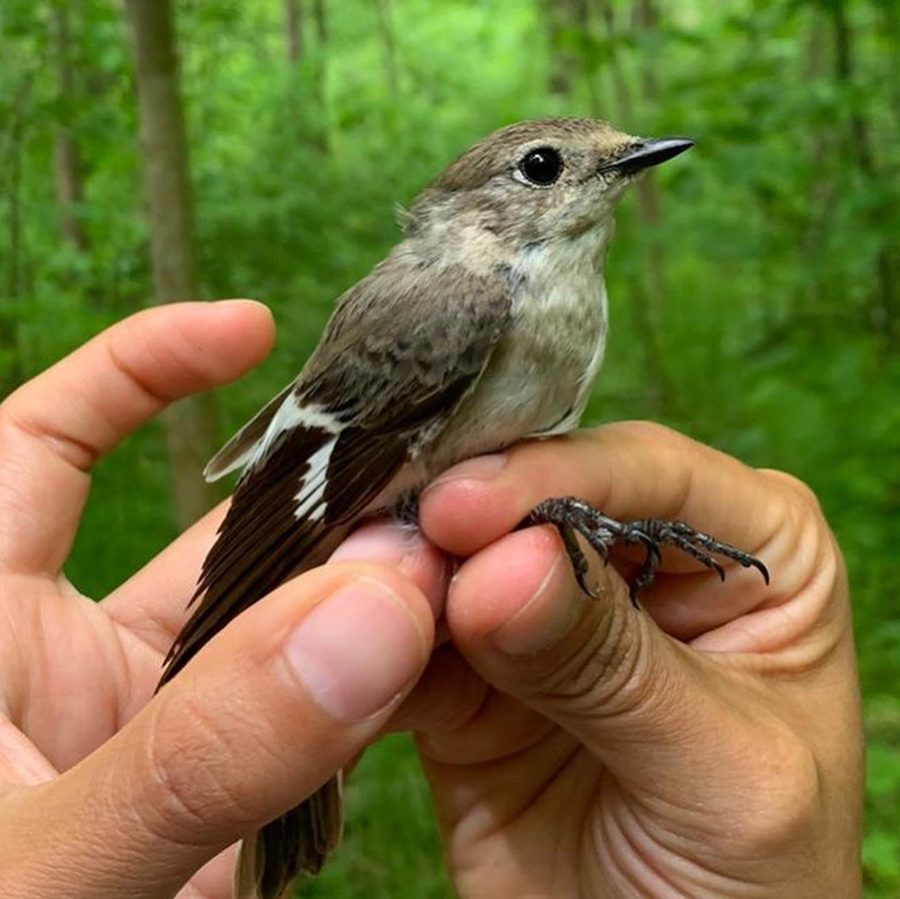
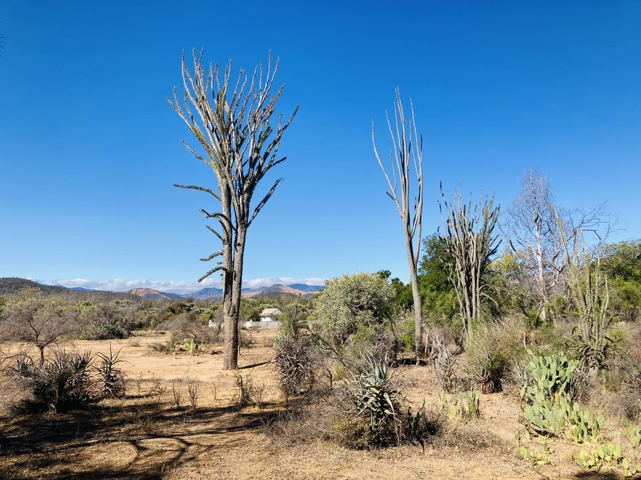
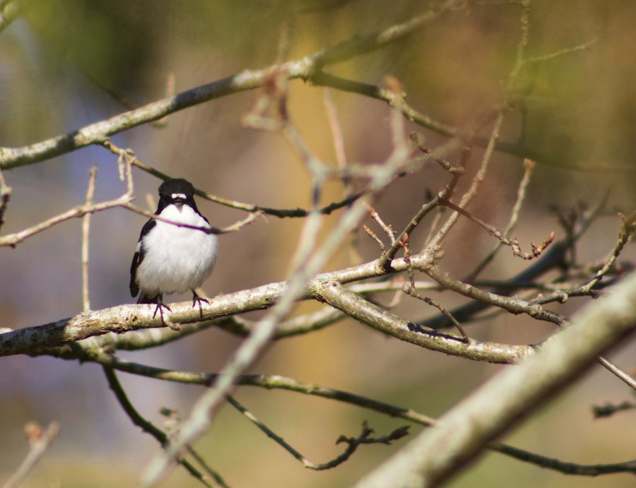
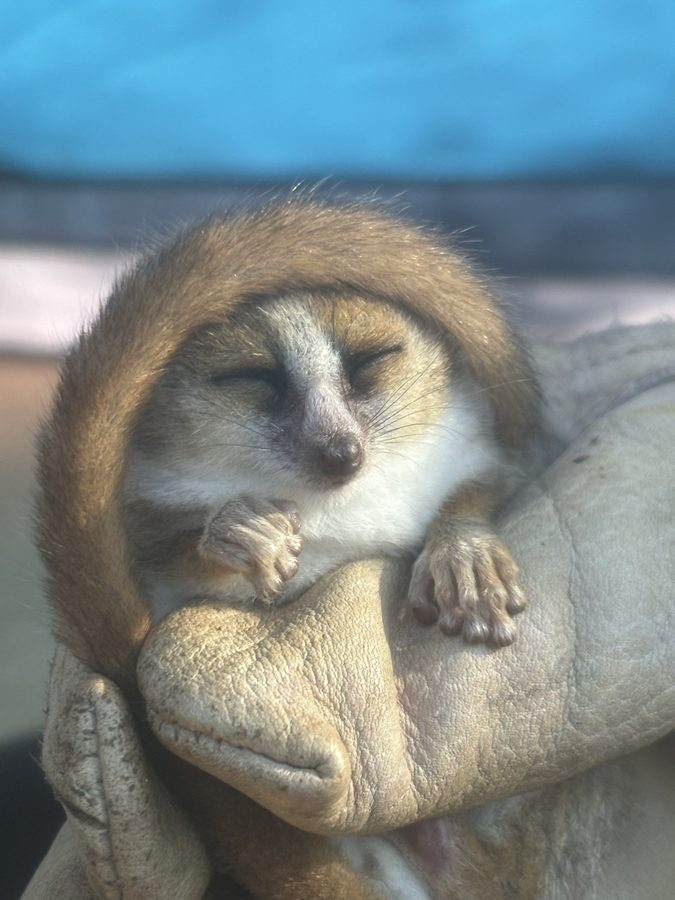
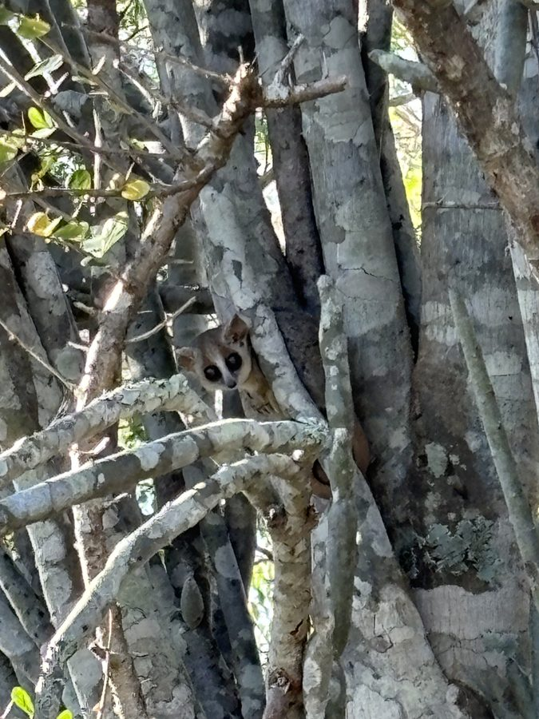
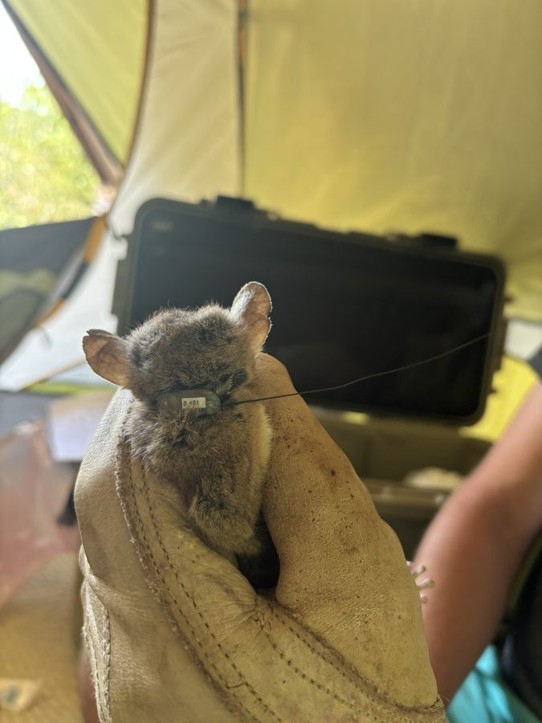

Evolutionary Biology · Duke University
J. Carolina
Segami
Postdoctoral Associate
I study how species form and are maintained — investigating population genetics, hybridization, ecology, behaviour, aposematism, and genetic incompatibilities. My fieldwork has taken me from the forests of Scandinavia to the dry spiny forests of Madagascar, following some of the world's most fascinating birds and mammals.
About

About me
I am an evolutionary biologist broadly interested in speciation, though I prefer to define myself as a generalist — I love taking an integrative approach to whatever system I'm working with from the field, to the lab, to the bioinformatics.
I grew up in Lima, Peru, where I completed my undergraduate degree in biology at UPCH. From there I joined the MEME Erasmus Master's program in evolutionary biology, which took me across institutions in Europe and allowed me to discover the evolutionary biology field. After I graduated, I spent a year teaching undergraduates back in Peru. Then I started my PhD in Anna Qvarnström's lab at Uppsala University, where I worked with Ficedula flycatchers. My dissertation focused on the genetic basis of hybrid male sterility using scRNA-seq, alongside the remarkable long-term population dataset the flycatcher project has been building for over 20 years. I also kept a side project going on strawberry poison dart frogs — a system I started working with during my masters.
I am currently a postdoctoral associate in the Yoder Lab at Duke University, where my work focuses on speciation genomics of mouse lemurs in Madagascar.
Research
3 projects
Speciation
Flycatcher hybridization & reproductive isolation
Investigating how reproductive barriers form between diverging flycatcher lineages using genomics and field studies.
Madagascar
Mouse lemur speciation
Field studies in ecology, behaviour and genomics.

Aposematism
The strawberry poison frog project
Aposematism and early stages of speciation in O. pumilio populations.
Publications
Google Scholar ↗Single-cell transcriptomics reveals rapid divergence of genes guiding meiosis and spermiogenesis in two passerine birds
Genome Research, gr.281911.126
New genetic evidence from the Ambatotsirongorongo/Petriky complex in southeast Madagascar calls for an immediate re-evaluation of conservation strategies focusing on the Bemanasy mouse lemur (Microcebus manitatra)
Lemur News
Geographic contrasts between pre‐ and postzygotic barriers are consistent with reinforcement in Heliconius butterflies
Evolution, 73(9), 1821–1838
Cryptic female Strawberry poison frogs experience elevated predation risk when associating with an aposematic partner
Ecology and Evolution, 7(2)
The diet of two species of Tyto in southeastern Madagascar
In preparation
Field gallery
From the field





Contact
Happy to collaborate, review or brainstorm.
Duke University
Department of Biology